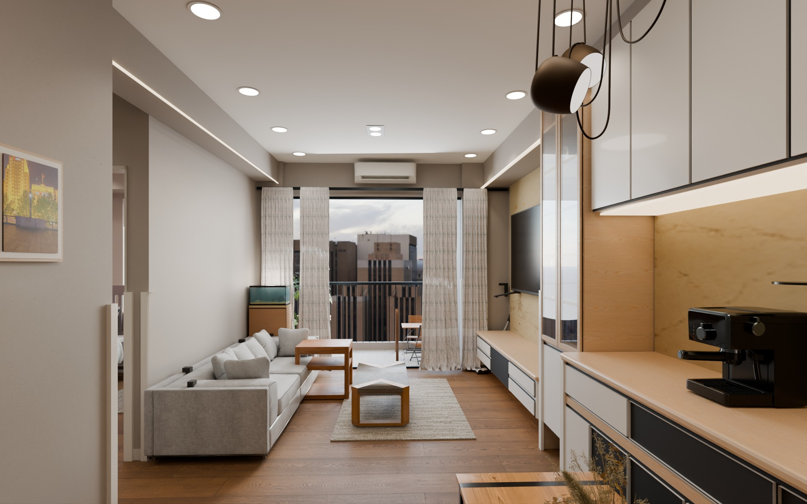
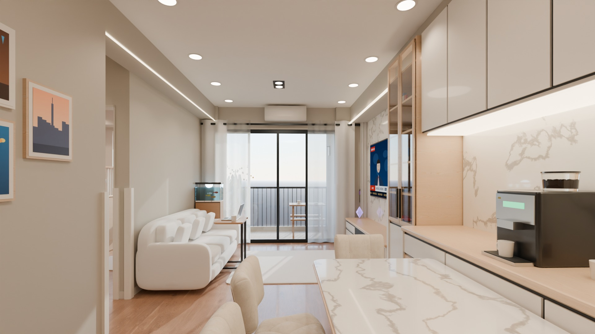

模型實景渲染 / 客廳A DIFFERENT PERSPECTIVE
從材質，感受生活。
保留原案的空間骨架，重新配置家具、織物與光線。這是一份可回到模型繼續修改的居家提案。
EXPLORE IN 360°
轉個角度，看看家。
拖曳環顧 · 雙指縮放
選擇房間切換固定視點
正在準備導覽…
THE ROOMS
每個空間，都有細節。
點選影像可放大觀看
TWO INTERPRETATIONS
同一個家，兩種呈現。

本次沿用原案建築，加入另外取得的家具模型與影像材質，調整光線及視角。兩張圖並非相同相機與照明條件。兒童房另改為落地單人床，屬替代設計。